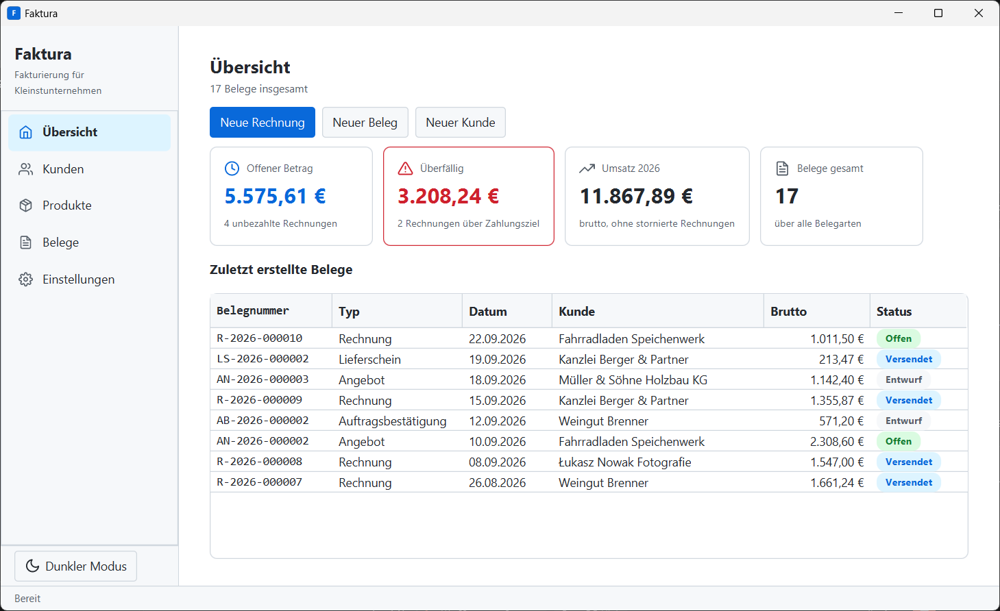
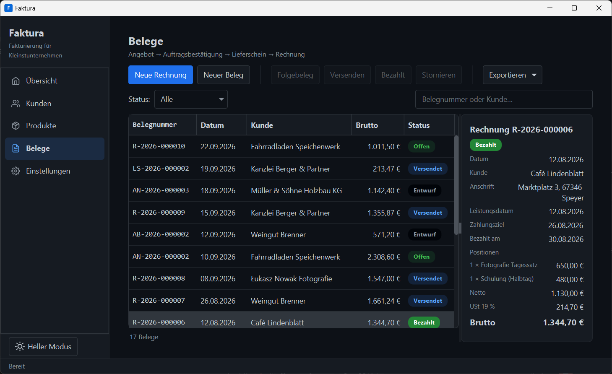
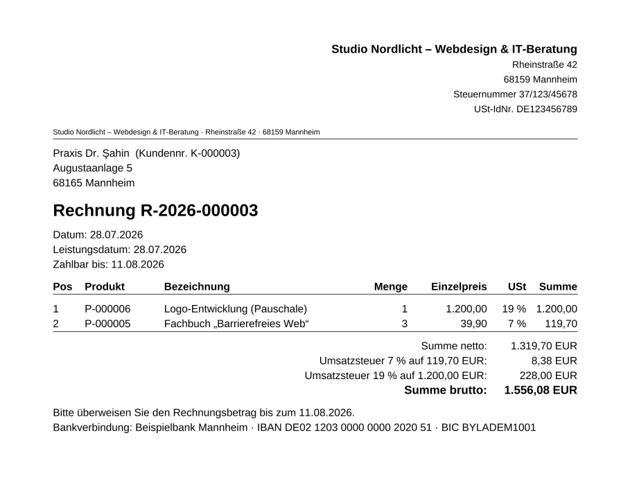

Overview
Faktura is a lean desktop invoicing application for freelancers and micro-businesses. It manages customers and products and covers the full commercial document cycle — quote → order confirmation → delivery note → invoice — with PDF output, EN 16931 e-invoicing, gap-free invoice numbers and immutable sent documents. Everything runs locally: no cloud, no subscription, no telemetry.
Faktura started in the Software Engineering 1 module at TH Mannheim (summer semester 2026). Twelve students in four groups went through the full V-model process — requirements, specification, design, module testing, acceptance — with each group owning one of the four components. I managed the repository and wrote all of the project documents. Since the course ended, I have been developing Faktura on my own into a shippable application.
As of version 3.0: around 12,600 lines of Java, 201 automated tests, a coverage gate and SpotBugs enforced in the build, and a Windows installer plus a cross-platform JAR published from a Git tag.
The Problem
Invoicing is a compliance problem dressed up as CRUD. Spreadsheets are free but not legally robust. SaaS tools charge an ongoing subscription for a handful of invoices a month and put customer data on someone else's servers. Open-source alternatives demand setup and maintenance from people whose job isn't IT. On top of that comes e-invoicing: since 2025 every German business must be able to receive structured invoices, and from 2027/2028 issue them — a PDF is no longer enough.
The screens look like ordinary CRUD. Underneath are rules that must hold always, not usually:
- GoBD, completeness: no invoice number may ever be lost, not even when saving fails.
- GoBD, immutability: a sent invoice is never edited or deleted — it is offset by a cancellation invoice.
- § 14 UStG (German VAT Act): mandatory details on every invoice, including the tax number and VAT broken down per tax rate.
- EN 16931: structured XML alongside the PDF — with exactly the same amounts.
- GDPR: customer data stays on the user's machine.
A project that passed acceptance is not yet a product. Version 1.0 passed — every mandatory requirement implemented, 71 of 71 module tests green. It still wasn't shippable:
- Data lived in JSON files that were rewritten in full on every change.
- The invoice counter was a number in memory, incremented before saving. If saving failed, the number was gone — a silent violation of exactly the rule that matters most.
- Hand-wired dependency injection and a Swing UI that froze on every PDF export.
- E-invoicing — the part the law actually requires — was an explicit non-goal.
So the real project was to rebuild a codebase that works into one that holds up — without throwing away the parts that had earned their place.
Five Decisions That Carry the Rules
In each case, the obvious implementation was the wrong one.
- Gap-free numbers as a database invariant. Number assignment runs in the same transaction as saving the document, so a failed save rolls it back too. A test forces exactly that failure and checks that no gap appears.
- Sent documents are immutable. Instead of editing or deleting, Faktura issues a cancellation invoice — with its own number, negative quantities, a reference to the original, and exported as an e-invoice of type 384 (corrected invoice).
- Snapshots, not references. Each document stores the customer, the issuer and the prices as they were when it was created. Moving office or switching banks never rewrites old invoices.
- PDF and e-invoice match to the cent. Version 1.0 rounded VAT per line item; the standard calculates per tax rate. With ten items at €1.10 each that's €2.10 versus €2.09 — the same invoice would have had two totals. Faktura calculates per tax rate, and a test pushes exactly this case through both output paths.
- The UI only sees data that survived the commit. Change events are delivered after commit, so a rollback never leaves the UI showing a record that doesn't exist. Anything slow runs in the background.

Approach
Twelve phases across two releases. The order was deliberate: the quality baseline came first, so that every later structural change — swapping the persistence layer, replacing the entire UI toolkit — had a test suite and static analysis underneath it, not beside it.
- Version 2.0: quality baseline (validation, logging, CI, JaCoCo, SpotBugs), Spring IoC, SQLite and Flyway behind the existing repository interfaces, a complete JavaFX rebuild, company profile, EN 16931 e-invoicing, and an MSI installer with a tag-driven release workflow.
- Version 3.0: transactional number assignment, background execution, backups via
VACUUM INTO, a new UI with dashboard and dark mode, VAT per tax rate, payment tracking, cancellation invoices, issuer snapshots and a cross-platform JAR.
Tech Stack
- Java 21 — records for value types, text blocks for readable SQL.
- Spring Boot — not for a web server, but for the IoC container, declarative transactions and transaction-bound events.
- JavaFX with AtlantaFX — desktop rather than browser, because running locally is the product promise.
- SQLite, Spring JDBC and Flyway — one user, no installation, one file to back up; explicit SQL instead of JPA.
- Apache PDFBox and Mustang — a fixed business layout with an embedded font; EN 16931 through a validated library instead of hand-written XML.
- Maven, JUnit 5, JaCoCo, SpotBugs, GitHub Actions, jpackage — build, quality assurance and delivery.

Results
- 201 automated tests, all green — up from 71 at the version 1.0 acceptance.
- Coverage gate in the build: 85% of statements and 70% of branches in non-UI code.
- Zero SpotBugs findings, enforced by the build rather than just reported.
- Performance as a test: 5,000 customers, 5,000 products and 1,000 documents against the limits in the requirements (startup ≤ 5 s, search ≤ 1 s, PDF ≤ 2 s).
- Full traceability: every requirement is mapped to the code and the test case that covers it.
- One-step delivery: a Git tag builds and publishes the Windows installer and the JAR.
What I Learned
A counter in memory is not a business rule. "Gap-free" is a property of how numbers are assigned, not of the numbers you happen to see in the list. For an invariant that has to hold even when things fail, the test that forces the failure is the requirement.
That test paid off a second time. A harmless-looking interface change routed a call around Spring's transaction proxy. Everything compiled and every functional test stayed green — only the integrity test failed. Without it, the exact bug that version 3.0 fixed would have shipped again.
Rounding is domain logic. Whether VAT is rounded per item or per tax rate looks like an implementation detail, yet it decides whether two legally required representations of the same invoice agree.
Interfaces make a rebuild survivable. The repository interfaces from version 1.0 survived the switch from JSON to SQLite unchanged, and the UI-free controller classes survived the switch from Swing to JavaFX.
Green tests don't mean "it works". Truncated table columns or shortcuts that opened the wrong dialog were invisible to the build and obvious seconds after launching the app. For anything with a UI, looking at it is part of the definition of done.
Built with Claude Code
Faktura was built with Claude Code as a tool. It took on the mechanical bulk — package-wide refactorings, scaffolding for repositories, services and tests, UML sources and drafts of the specifications. The decisions were mine: which rules are invariants, that number assignment belongs inside the transaction, what stays from version 1.0, and whether a change was really finished.
Every change had to clear the same bar — tests, coverage gate, SpotBugs — and anything visible was checked by launching the app and looking at it.
What's Next
- A usability test with five people — the only acceptance criterion that code can't prove.
- The small-business VAT exemption (§ 19 UStG) and other exemptions, with the required notice.
- Payment reminders.
- Installer packages for Linux and macOS.
Überblick
Faktura ist eine schlanke Desktop-Anwendung zur Fakturierung für Freiberufler und Kleinstunternehmen. Sie verwaltet Kunden und Produkte und bildet den vollständigen kaufmännischen Dokumentenzyklus ab — Angebot → Auftragsbestätigung → Lieferschein → Rechnung — mit PDF-Ausgabe, E-Rechnung nach EN 16931, lückenlosen Rechnungsnummern und unveränderlichen versendeten Belegen. Alles läuft lokal: keine Cloud, kein Abo, keine Telemetrie.
Gestartet ist Faktura im Modul Software Engineering 1 an der TH Mannheim (Sommersemester 2026). 12 Studierende in vier Gruppen haben den vollständigen V-Modell-Prozess durchlaufen — Lastenheft, Pflichtenheft, Entwurf, Modultest, Abnahme —, jede Gruppe mit einer der vier Komponenten. Ich habe dabei das Repository verwaltet und sämtliche Projektdokumente verfasst. Seit Projektabschluss entwickle ich Faktura allein zu einer auslieferbaren Anwendung weiter.
Stand Version 3.0: rund 12.600 Zeilen Java, 201 automatisierte Tests, Abdeckungsschwelle und SpotBugs im Build erzwungen, Windows-Installer und plattformübergreifendes JAR per Git-Tag veröffentlicht.
Das Problem
Fakturierung ist ein Compliance-Problem im CRUD-Gewand. Tabellenkalkulationen sind kostenlos, aber nicht rechtssicher. SaaS-Lösungen kosten dauerhaft Miete für wenige Belege im Monat und legen Kundendaten auf fremde Server. Open-Source-Alternativen verlangen Einrichtungs- und Wartungsaufwand von jemandem, dessen Beruf nicht IT ist. Dazu kommt die E-Rechnung: Seit 2025 muss jedes Unternehmen strukturierte Rechnungen empfangen können, ab 2027/2028 auch ausstellen — ein PDF genügt dann nicht mehr.
Die Masken sehen aus wie gewöhnliches CRUD. Darunter liegen Regeln, die immer gelten müssen, nicht meistens:
- GoBD, Lückenlosigkeit: Keine Rechnungsnummer darf verloren gehen, auch nicht bei einem Fehler beim Speichern.
- GoBD, Unveränderbarkeit: Eine versendete Rechnung wird nie geändert oder gelöscht, sondern durch eine Stornorechnung ausgeglichen.
- § 14 UStG: Pflichtangaben auf jeder Rechnung, darunter Steuernummer oder USt-IdNr. und die Steuer je Steuersatz.
- EN 16931: Strukturiertes XML zusätzlich zum PDF — mit exakt denselben Beträgen.
- DSGVO: Kundendaten bleiben auf dem Rechner.
Ein abgenommenes Projekt ist noch kein Produkt. Version 1.0 bestand die Abnahme — alle Muss-Anforderungen umgesetzt, 71 von 71 Modultestfällen grün. Auslieferbar war sie trotzdem nicht:
- Die Daten lagen in JSON-Dateien, die bei jeder Änderung vollständig neu geschrieben wurden.
- Der Rechnungszähler war eine Zahl im Speicher und wurde vor dem Speichern erhöht. Schlug das Speichern fehl, war die Nummer verbraucht — ein stiller Verstoß gegen genau die Regel, auf die es am meisten ankommt.
- Manuelle Dependency Injection und eine Swing-Oberfläche, die bei jedem PDF-Export einfror.
- Die E-Rechnung, also das gesetzlich Geforderte, war ausdrückliches Nichtziel.
Das eigentliche Projekt war deshalb: eine Codebasis, die funktioniert, so umzubauen, dass sie trägt — ohne die Teile wegzuwerfen, die ihren Platz verdient haben.
Fünf Entscheidungen, die die Regeln tragen
Bei jeder war die naheliegende Umsetzung die falsche.
- Lückenlose Nummern als Datenbank-Invariante. Die Nummernvergabe läuft in derselben Transaktion wie das Speichern des Belegs; ein fehlgeschlagenes Speichern rollt sie mit zurück. Ein Test erzwingt genau diesen Fehler und prüft, dass keine Lücke entsteht.
- Versendete Belege sind unveränderlich. Statt zu ändern oder zu löschen, entsteht eine Stornorechnung — mit eigener Nummer, negativen Mengen, Verweis auf das Original und als E-Rechnung vom Typ 384 (korrigierte Rechnung).
- Snapshots statt Verweise. Jeder Beleg speichert Kunde, Aussteller und Preise so, wie sie beim Erstellen galten. Ein Umzug oder Bankwechsel schreibt keine alten Rechnungen um.
- PDF und E-Rechnung stimmen auf den Cent überein. Version 1.0 rundete die Steuer je Position, die Norm rechnet je Steuersatz. Bei zehn Positionen zu je 1,10 € ergibt das 2,10 € gegenüber 2,09 € — dieselbe Rechnung hätte zwei Endbeträge gehabt. Faktura rechnet je Steuersatz, und ein Test schickt genau diesen Fall durch beide Ausgabewege.
- Die Oberfläche sieht nur, was den Commit überlebt hat. Änderungsereignisse werden erst nach dem Commit zugestellt, damit nach einem Rollback kein Datensatz angezeigt wird, den es nicht gibt. Alles, was dauern kann, läuft im Hintergrund.
Vorgehen
Zwölf Phasen in zwei Releases. Die Reihenfolge war bewusst gewählt: Die Qualitäts-Baseline kam zuerst, damit jeder folgende strukturelle Eingriff — Austausch der Persistenzschicht, Ersetzen des gesamten UI-Toolkits — eine Testsuite und eine statische Analyse unter sich hatte, nicht daneben.
- Version 2.0: Qualitäts-Baseline (Validierung, Logging, CI, JaCoCo, SpotBugs), Spring-IoC, SQLite und Flyway hinter den bestehenden Repository-Schnittstellen, vollständiger JavaFX-Neubau, Firmenprofil, E-Rechnung nach EN 16931, MSI-Installer mit Tag-gesteuertem Release-Workflow.
- Version 3.0: transaktionale Nummernvergabe, Hintergrundausführung, Datensicherung über
VACUUM INTO, neue Oberfläche mit Übersicht und Dunkelmodus, Steuer je Steuersatz, Zahlungseingang, Stornorechnung, Aussteller-Snapshot und ein plattformübergreifendes JAR.
Technik
- Java 21 — Records für Wertetypen, Textblöcke für lesbares SQL.
- Spring Boot — nicht wegen eines Webservers, sondern wegen IoC-Container, deklarativer Transaktionen und transaktionsgebundener Ereignisse.
- JavaFX mit AtlantaFX — Desktop statt Browser, weil lokaler Betrieb das Produktversprechen ist.
- SQLite, Spring JDBC und Flyway — ein Benutzer, keine Installation, eine Datei zum Sichern; explizites SQL statt JPA.
- Apache PDFBox und Mustang — festes kaufmännisches Layout mit eingebetteter Schrift; EN 16931 über eine validierte Bibliothek statt handgeschriebenem XML.
- Maven, JUnit 5, JaCoCo, SpotBugs, GitHub Actions, jpackage — Build, Qualitätssicherung und Auslieferung.
Ergebnisse
- 201 automatisierte Tests, alle grün — zur Abnahme der Version 1.0 waren es 71.
- Abdeckungsschwelle im Build: 85 % Anweisungen und 70 % Zweige im nicht-grafischen Code.
- SpotBugs ohne Befunde, im Build erzwungen statt nur berichtet.
- Performance als Test: 5.000 Kunden, 5.000 Produkte und 1.000 Belege gegen die Grenzwerte des Lastenhefts (Start ≤ 5 s, Suche ≤ 1 s, PDF ≤ 2 s).
- Vollständige Nachvollziehbarkeit: Jede Anforderung ist auf Code und Testfall abgebildet.
- Auslieferung auf Knopfdruck: Ein Git-Tag baut und veröffentlicht Windows-Installer und JAR.
Was ich gelernt habe
Ein Zähler im Speicher ist keine Geschäftsregel. „Lückenlos“ ist eine Eigenschaft der Vergabe, nicht der Nummern, die man zufällig in der Liste sieht. Bei einer Invariante, die auch im Fehlerfall halten muss, ist der Test, der den Fehler erzwingt, die eigentliche Anforderung.
Dieser Test hat sich später noch einmal ausgezahlt. Eine harmlos wirkende Schnittstellenänderung ließ einen Aufruf am Transaktions-Proxy von Spring vorbeilaufen. Alles kompilierte, alle fachlichen Tests blieben grün — nur der Integritätstest schlug an. Ohne ihn wäre genau der Fehler zurückgekehrt, den Version 3.0 behoben hatte.
Rundung ist Fachlichkeit. Ob je Position oder je Steuersatz gerundet wird, wirkt wie ein Implementierungsdetail und entscheidet doch, ob zwei gesetzlich geforderte Darstellungen derselben Rechnung übereinstimmen.
Schnittstellen machen einen Umbau überlebbar. Die Repository-Schnittstellen aus Version 1.0 überstanden den Wechsel von JSON auf SQLite unverändert, die GUI-freien Controller-Klassen den Wechsel von Swing auf JavaFX.
Grüne Tests heißen nicht „funktioniert“. Abgeschnittene Tabellenspalten oder Tastenkürzel, die den falschen Dialog öffneten, waren für den Build unsichtbar und nach dem Start der Anwendung sofort offensichtlich. Bei allem mit Oberfläche gehört das Hinsehen zur Definition von „fertig“.
Mit Claude Code entwickelt
Faktura ist mit Claude Code als Werkzeug entstanden. Es hat die mechanische Masse übernommen — paketweite Umbauten, Gerüste für Repositories, Services und Tests, UML-Quellen und Entwürfe der Spezifikationen. Die Entscheidungen lagen bei mir: welche Regeln Invarianten sind, dass die Nummernvergabe in die Transaktion gehört, was aus Version 1.0 bleibt und ob eine Änderung wirklich fertig war.
Jede Änderung musste dieselben Hürden nehmen — Tests, Abdeckungsschwelle, SpotBugs —, und alles Sichtbare wurde durch Starten und Hinsehen geprüft.
Ausblick
- Usability-Test mit fünf Personen — das einzige Abnahmekriterium, das Code nicht belegen kann.
- Kleinunternehmerregelung (§ 19 UStG) und Steuerbefreiungen mit Pflichthinweis.
- Mahnwesen.
- Installationspakete für Linux und macOS.